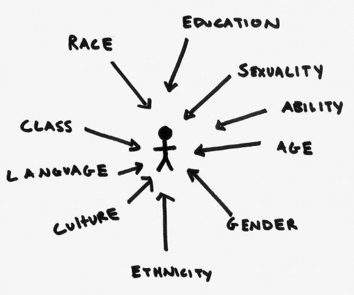

The Intersections of Technology
Before we begin you may be wondering...who is this lady standing in front of you?
Let's talk gender and racial diversity
- When it comes to diversity, gender and race appear to be in two separate silos
- Very rarely have I heard talk of women of colour at diversity in tech events
- Some of you may think we are all women and race has nothing to do with it because "I don't see colour"
- Women of colour may think, "why am I not being represented at these groups that aim for the inclusion of all?"
Let's Break it Down
- According to the 2011 Census, people from a BAME (Black, Asian and Minority Ethnic) background formed 40.2% of the Greater London population. That's quite a big chunk of us! Yet we do not occupy 40% of technology roles in London
- A late 2015 Creative Skillset Employment Survey showed that 19% of roles in the games industry are occupied by Women. Which is higher than the national average
- The same survey showed that only 4% of roles in the games industry are represented by BAME people (the national average is 10%)
Quick Question
- What percentage of these roles are occupied by BAME women?
- We don't know

What is Intersectionality?
The view that women experience oppression in varying configurations and in varying degrees of intensity. Cultural patterns of oppression are not only interrelated, but are bound together and influenced by the intersectional systems of society. Examples of this include race, gender, class, ability, and ethnicity.
That was alot of words! Let me explain with a picture

Do BAME Women Study STEM subjects?
The Business in the Community factsheet about Ethnic Minorities studying STEM subjects for the academic year of 2009/10 showed
- Only 18% of all Women studying a STEM subject were from a BAME background